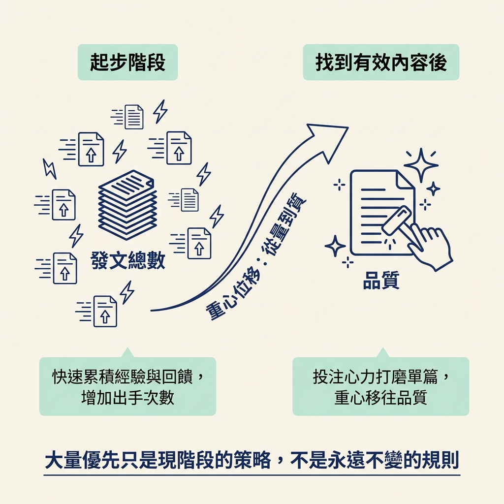

你會了解為什麼初學者適合先增加發文量，也會釐清「發太多會被平台懲罰」這個擔心。
上一個節點，我們重新看過「品質」：內容要有用，也要讓人聽得清楚。方向有了，但等你準備發第一支影片，另一個實際問題馬上出現：到底該發多少？
一週一篇、一天一篇，還是想到才發？網路上的建議各有各的說法，還沒開始就先卡在「我這樣發對不對」。這一節要回答這個問題，也要拆解一個常見的擔心：發得太多，會不會被平台懲罰？
課程直接問：你該發多少？給初學者的答案是：能發多少，就盡量發多少（as many as you humanly can）。
這句話聽起來很絕對，所以先說清楚：它不是叫你隨便亂發，也不是說發得越多就一定越好。它針對的是剛起步、還沒有手感，也還不知道哪種內容有效的階段。這時把重心放在「量」上，是有理由的策略，不只是一句鼓勵人的口號。
初學者常以為自己卡住，是因為作品還不夠精緻，於是花很多時間反覆修改同一支影片、同一張封面，或同一段開頭。但對還沒發過幾篇的人來說，真正的瓶頸通常是學得太慢：你還不知道觀眾對什麼有反應，也還不清楚自己擅長哪種表達。
這些答案光靠想像得不出來。你得先做出內容、發出去，才能收到回饋。每多發一篇，就多一次練習和檢視的機會，也能更快調整方向。這就是為什麼課程的答案刻意偏向「量」：先動起來，不要等到完美才開始。
這就像練投籃。投丟幾球，不代表你該停下來；你得投過足夠多次，才會慢慢抓到手感。內容創作也是如此。起步時，你需要的不是每次都投進，而是有足夠多次出手的機會。
很多人不敢多發，是因為擔心平台不喜歡太頻繁的貼文，進而降低內容曝光。課程對這個疑問的回答是：平台並不會限制你能發多少。換句話說，你不需要為了「保護帳號」，刻意壓低發文量。
講師也分享了自己的早期做法：一天三篇（3 a day）。這不是要你照抄的目標，而是講師回顧自己起步階段時提供的例子。它至少說明，初學時一天發好幾篇，也可以是一種合理的節奏，不必先認定這樣做很危險。
你可能會問：那品質呢？上一個節點才提到內容要有用、要讓人聽得清楚，這裡又說要增加發文量，兩者並不衝突。只是不同階段的重心不一樣。
「大量優先」是現階段的策略，不是永遠不變的規則。還沒有手感、也不清楚觀眾喜歡什麼的時候，多發幾篇能幫助你更快累積經驗。等你發得夠多，逐漸找到有效的內容，再把更多心力放在品質上也不遲。起步時，先增加出手次數，通常比把單篇作品磨到發亮更能讓你前進。

| 等準備好再發 | 能發多少就發多少 | |
|---|---|---|
| 重心放在哪 | 把單篇磨到最好 | 增加發文總數 |
| 能累積什麼 | 技巧，但練習次數少 | 手感，也有更多內容可供比較 |
| 拿到的回饋 | 少，而且來得慢 | 多，而且來得快 |
| 主要風險 | 遲遲沒有開始 | 前期作品可能比較粗糙 |
對剛起步的人，課程對「該發多少」的答案刻意偏向量：能發多少，就盡量發多少。不是因為「多就是好」，而是多做幾次，能讓你更快練習、收到回饋，也更快找到方向。課程指出，平台不會限制你能發多少；講師自己早期的做法是一天三篇。記得，這是起步階段的策略，不代表品質永遠不重要。
方向定了：先增加發文量。但如果只是埋頭一直發，跟亂槍打鳥又有什麼差別？下一節會介紹 Content Pyramid，也就是「內容金字塔」：它會說明如何把發文量和內容品質連在一起，讓每篇新內容都有機會比上一篇做得更好。